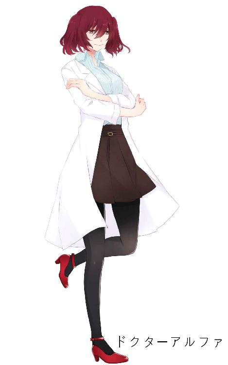
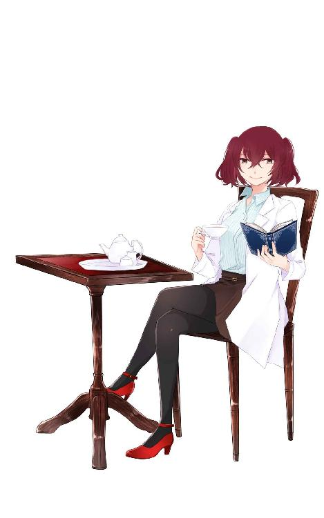

| ドクターアルファのティータイム EP1～赤い紅茶とリストカット～ | |
| 白色黒蛇 | |
| (2018) | |
ドクターアルファのティータイム EP1～赤い紅茶とリストカット～
白色黒蛇
プロローグ
人は死んだら生き還らない。
死んだ人とはもう逢えない。
死んだ人とはもう喋れない。
これは絶対だ。この世の理（ことわり）だ。
けれどそれを嘲笑して否定する女が１人。
「それは、いつのお話なんだい？」
それを唱える全ての者を、無知だと、時代遅れだと嘲笑う。
その女、赤い髪のツインテール、裸眼、色白、細身で高身長。年齢は見たところだいたい２０代後半から３０代くらい。少し派手に見える顔。パッと見かなり目立つ赤いハイヒール。そしてそれらに似合わない、医者のような白衣を着ている。
彼女は、笑顔を崩さなかった。
［削除済み］の手記――１
７月２４日
まさか、まさかまさか。
本当に成功するとは思わなかった。実験用検体の［修正済み］の生態復元に成功した。
正直、成功までにはあと１０回以上の検証が必要だと思っていたけど成功するなんて、今でも信じられない
でもまだ課題は残っている。生態復元された検体［修正済み］の筋肉や臓器に信号を送る機能や識字能力、言語中枢に異常は無かったが、重度の記憶喪失が見受けられる。どうやら［修正済み］の部分にまだ「ズレ」があるらしい。
引き続き検証を継続する。
赤い紅茶とリストカット
その日は雨が降っていた。大雨だ。ゴウゴウと雨音が止まず、窓ガラスに水滴が絶え間なく、まるで機銃のように打ち付ける。こんな天気だ。きっと今ここで大声を出したとしてもかき消されてしまうだろう。けれど、この部屋で誰も大声を出すことはない。私も、目の前の彼も。
当然だ。だってこれは私たち２人の選択なのだから。
「ごめん、ごめんねユウくん」
「気にすんな、むしろユカナと一緒に逝けて嬉しい」
狭い四畳半の一室の畳。
薄緑の畳が少しずつ、ゆっくりと、徐々に赤く染まって行く。
横になる２人を中心にしてまあるくその「赤」が広がる。
赤はゆっくり畳の薄緑を侵略する。
その侵略の中心で向かい合って眠る男女。額を合わせ、手を握り、足を絡ませて対になる姿勢を維持している。
いつまでも、いつまでも、いつまでも、いつまでも、いつまでも。
それはシンメトリーを用いた現代美術か何かのような絵柄だった。
先に事切れたのは、男の方だろうか？ もしくは女の方だろうか？ それとも同時だろうか？
その答えは誰にも分からない。
その答えは誰も知らない。
そもそも、その答え自体に価値はない。
こうして若い２つの命は尽きた。
......いや、今の記述は間違いだ。申し訳ない。謝罪した上で訂正しよう。
若い「１つの」命はこうして尽きた。
そうだ。こっちが正しい。
もう片方の命には、もう少しだけ続きがあるのだから。
パチリ。
私が目を覚ますとそこはとにかく一面真っ白い部屋だった。
真っ白い壁、真っ白い天井。真っ白い布団。真っ白い枕。ちょっとだけ見える戸棚も同じように真っ白い。
どこもかしこも白、白、しろ、シロ。
違うのは私が着ているのは入院中の患者のような薄青の病衣と、私の皮膚の色だけだ。
どう考えても見知らぬ光景。まるで「清潔」を体現したような部屋。ほんの少し指先がどこかに触れただけで汚れてしまいそうな場所で私は寝ていた。
「ここ......は？」
私は何でこんなところにいるんだろうか？
もちろん自分自身で移動した覚えなどない。
ううむ、どういうことだ？
とりあえず体を起してみる。
少し身体が重い気がする。けれどそれを除けばおかしいところは一切見受けられない。至って普通、至って正常だと思う。
身体に異常がないと判断したところで、次に移ろう。私は今ここで目を覚ます直前まで何をしていたか、どんな状況だったかを思いだそうとする。
どうしてこうなったんだか......
............待て「目を覚ます？」
ちょっと思い出して考えてみれば「目を覚ます」と言う事自体が根本的におかしいということに気付いた。
ならばなんで私は「目を覚ました」んだ？
そこからおかしい。それ自体が奇妙だ。
そもそも、そもそも私は死んだはずなのだ。
最愛の人と一緒になれないなら、ロクな将来が望めないなら、一生束縛された人生ならと私たちは命を絶ったはずなのだ。
カッターナイフでお互いの手首を深く、深く切り、そのまま眠るように失血死したはずだ。そのはずだ。そうだったはずだ。
それなのに目を覚ました。と言う事はつまり「死に損なった」ってことか？
私だけ生き延びてしまったのか？
それとも......これが俗に言う死後の世界と言うやつなのだろうか？
あの世というものがどういうところなのかは全く見当がつかないのだがもしかしてここがそうなのだろうか？ 本当に死後の世界とはこんな場所なのか？
仮にそうだとするならば、なんだか妙だ。
あたり一面真っ白という点に違和感、というかそれらしさはない訳ではないが、寝ている布団といいベッドと言い薄青の病衣といい......まるでこの世で使われているもののようだ。
あの世と言うにはやたらと「この世感」が強い。これは一体――
「おっはよぉぉぉう！！」
「う、うひゃああ！！」
突然視界の外にでもあったのだろうドアが勢いよく開く音。その後、間髪いれずに超ハイテンションな女性の声が警報のようにけたたましく響き渡った。
私の心臓がいきなりバクンと激しく動く。
驚きのあまり情けない叫び声を上げてベッドから転がり落ちてしまった。ドン、と鈍い音を立てて無様に地面にぶつかる。
「いっ！」
「お？ おぉう！ 大丈夫かい？」
幸い、一緒になってベッドから落ちた掛け布団がクッションになり、大した痛みは感じなかった。しかしそれより何より、ベッドから落ちた痛みなんかより今何が起きたのか理解できず、軽くパニックを起こす。
「あ、あなっ、あなっあなたっ！ は！？」
あなたは誰？ そう口にしようとするがなかなかどうして上手く言葉にならない。驚き過ぎて言葉を発する器官が機能しない。
「お、おうおう落ち着け落ち着けぇ......どうどうどう」
そんな私に対し、この一連のパニックを引き起こした張本人（？）はまるで部外者面でただひたすら落ち着くことを求めてきた。あなたのせいなのに。
「あ、あ、あなたは！ 誰！？」
ようやく、やっと、なんとかまともな言葉が私の口から出た。これで会話が始まる......と、思いきや
「ん？ あ、だーれだっ？」
張本人は自分を指さして回答を求める。
会話では無くクイズが始まった。
「知るか！？」
当然そう返す。
知る訳ないだろ。質問をクイズで返すな。
「まぁそうだろうね。知る訳ないよねぇ」
私と初対面のはずの女はへらへらと笑う。その表情はまるで「自分はあなたの全てを知っているよ」と言っているかのようだった。たった今、この女に対して私が抱いた正直な感想を述べる。
気味が悪い、気持ち悪い、気色悪い。
その女、赤い髪のツインテール、裸眼、色白、細身で高身長。年齢は見たところだいたい２０代後半から３０代くらい。少し派手に見える顔。パッと見かなり目立つ赤いハイヒール。そしてそれらに似合わない、医者のような白衣を着ている。
「思いのほか元気そうだね。アタシの仕事も上手く言ったってことかな？ 良かった良かった」
うんうんと頷く女。動揺している私をシャットアウトし、独りで勝手に納得している
......あれ？
「仕事？」
今この女は「仕事」と言った。仕事とは何のことだ？ 何の仕事だ？ さっきの言葉を考えるとどうやらその仕事とやらに私は関係あるようだったが......
そう私が考えているとその女は隠し立てすることなく堂々と答えた。
「あぁ、キミを『復元する』仕事さ」
......「隠し立てすることなく」と言うさっきの一文は修正させて欲しい。
隠し立てしているのかどうかイマイチ分からないからだ。
そもそも今の回答自体、何を言っているのかさっぱり分からない。
どういうことだ？ 復元？
復元と言うと、確かこう言う意味だったはずだ。
確か......
ふく‐げん【復元／復原】［名］（スル）
もとの形態・位置に戻すこと・また、戻ること。
例文：壊れた遺跡を――する。
今この女は「君を「復元する」仕事」と言った。
君、これはすなわち私こと「大久保ユカナ」を指している言葉だろう。
復元、これは先に述べた通りだ。
つまりこういうことになる。
「私を復元した」
という事はつまり、
「大久保ユカナを復元した」
という事はつまり、
「大久保ユカナをもとの形態に戻した」
という事......うん、駄目だ。結局何を言っているのかさっぱり分からない。
意味不明だ。理解不能だ。ちんぷんかんぷんだ。
「キミ今、意味が分からないって思ってるだろう？」
私が思っている事をこの女が笑顔のまま口にした。バクン、とまた心臓が激しく動く。
くそ、なんだか本当にこの女に全てを見透かされているみたいだ。ニヤニヤと笑っているその笑顔がいっそう気味悪く思える。そして何より腹が立つ。
「ま、キミにも分かりやすく言うとだね、アタシは『一度死んだ君を生き還らせた』んだ」
さっきの言葉よりかはさらに分かりやすく答えてくれた。ありがとう。
今度は理解するのに苦労はしなかった。
なるほど、私を生き還らせたのか。そうかそうか......
「......はい？」
生き還らせた。つまり死んだ私はあの世には逝かずにこの女によってこの世に留められたと言う事。もしくはあの世から無理やりこの世に引き戻されたと言う事だ。
言っている事は分かった。けれど一切全く納得は出来なかった。
「嘘でしょ？ そんなこと......出来るの？」
死者蘇生。まるでＳＦかおとぎ話のようだ。死んだ人間を生き返らせる。どう考えても非現実的、ありえないと言わざるを得ない。
けれど、
「もちろん！ だからキミは今生きているんじゃないか」
女はさも当たり前であるかのようにそれを口にした。ありえない。決してありえないとは思う。けれど今はそれがあり得ると仮定すると、
「じゃ、じゃあ私は......一度......」
「うん、確かに死んだね。５年前に間違いなく。大好きな彼と一緒に仲睦まじくあの世へレッツゴーしたはずだね」
女は超不謹慎な表現を交えて私の死を肯定する。私が死んだという事実は確からしい。死に損なったということではないようだ。ちなみに、女の言い方の腹立たしさは一旦堪えることとする。
「そしてあなたが、生き還らせた......と？」
「オフコース！！」
女は親指を立ててもちろんだと肯定する。......腑に落ちないところがない訳ではないが、どうやら死んだ人間を生き還らせることは出来るらしい。出来るようだ。出来るようになったと考えて良いだろう。
そしてこの女の言葉が正しいならば、私は１度死んだが５年の時間を経て目の前の腹立たしい女の手によって生き還ったらしい。
と言う事は......
「ユウ君は？ 岩倉ユウも生き還らせられるの！？」
死んだ人を生き返らせることは出来る。事実、私は生き還る事が出来た。だとすれば私だけではなく彼だって、ユウ君だって生き還ることが出来るはずだ。
決して出来ないことはないはず。だって私は生き還る事が出来たんだから。
うるさくて腹立たしい女だが、もしそれが出来るなら私にとっては救世主だ。
その為だったらなんでもしよう。だからユウ君を――
「......それは無理だ。残念ながら」
女は即答で即座に否定した。
「なんで？ 私は生き還らせられたんでしょ！？ ユウ君が無理なんてこと......」
「誰でも生き還らせる訳じゃないよ。「条件」ってのがあるんだ。キミは運良く条件が整っていた。彼はそうじゃない。そう言う話」
「条件？ 条件って！？」
そう問うても女は答えてくれなかった。隠しておきたいのだろうか？ そのニヤけ面のまま黙っていた。
「教えてよ！ その条件をどうにかすればユウ君も生き還らせるんでしょ！？」
続けて問う。けれど女は答えない。答えてくれない。口を開かない。
その代わり、女は部屋の戸棚から白いティーポットとティーカップ２つを取り出した。何をするつもりだろう？
「うーん、ちょっとだけ冷えちゃったかなぁ？」
女がそう口にすると板に就いた様子で１つのティーカップに赤茶色の液体を注ぐ。そしてそれを注いだティーカップを１つ、私に手渡した。
「アッサムティーだ。ちょっと冷めてしまったが、熱過ぎるより飲みやすいだろう」
そのティーカップからは香ばしい紅茶の香りがする。
彼女はティータイムの用意をしていた。
「アッサムブロークン」
インド北東部、アッサム州原産の紅茶、
濃厚でクセの無い甘みが特徴で紅茶らしい芳醇な香りと強い味が特徴。そのまま飲むのはもちろん、甘味との相性も良く、ミルクティーとしても良く飲まれ、ミルクで煮出して抽出する「ロイヤルミルクティー」も格別である。
「もちろんミルクも砂糖もばっちり用意しているよ。半分くらい飲んだら言ってくれたまえ」
私は自分が寝ていたベッドに座って女に手渡された紅茶を口にしていた。色々納得いかないことは山ほどあるし、正直今も良く状況が飲みこめていないところもあるが、あのまま立ち話で全部聞き出そうとするよりかは紅茶でも飲んでじっくりゆっくり聞いた方がいいと思ったのだ。
「すまないね。今ちょおっと懐が寂しくてさ、パウンドケーキでも用意出来れば完璧なティータイムになっただろうが、許しておくれ」
そんなことで謝られても。
「別に、欲しいとも言ってないし」
紅茶絡みの事になると、元々うるさかったこの女は余計饒舌になるようだ。
こっちはあまり興味ないんだけどなぁ......あ、おいしい。
ドクターアルファは語りだす。
「知っていたかい？ 紅茶の名前はほとんどがその産地名を表していることが多い。今アタシたちが飲んでいる「アッサム」はもちろん、「ダージリン」もインドの地名だ。ちょうどダージリンの南東にアッサムがある。「ウバ」はスリランカの南東部の山岳地帯。「ジャワ」はスリランカにある「ジャワ島」って島の標高１２００メートルの高原地帯を指すそうだ。さらにさらに――」
私がアッサムに口をつけている間、ずっと語り続けている。
私はそんなうんちくが聞きたいんじゃない。
彼を生き還らせる「条件」が聞きたいんだ。
私は生き還る事が出来た。更に彼も生き還る事が出来たなら私が生前......生前と言う表現は今となっては些か妙だが、生前本当になりたかったものになれるかもしれない。
彼の、お嫁さんになれるかもしれない。
人は、生き還る事が出来る。
ならばそれも夢じゃないはずだ。
彼を生き還らせてもう一度人生をやり直して結婚して幸せになれる。
私を縛りつける鎖のような親と永遠に関わることなく、干渉されることなく、永遠に２人で一緒にいることが出来るはずだ。
だから私はなんとしてもこの女から......この女、このおんな。
「ねぇ、あなた名前はなんて言うの？」
この女の長話を遮るように名前を聞いた。
なんていうか、少しばかり不憫に感じた。「あなた」とか「お前」とか、二人称単数の代名詞で会話をするのもなんだか妙だと感じる。せめて呼ぶための名前を聞いておこう。そう思って私は名前を聞いた。
話を遮られたことを気にも留めず、女は私の質問に反応する。
「ん、ん？ あー......そう言えば言って無かったね。いや悪い癖だ。いつも名乗ることを忘れてしまう。何分こっちはそちらの名前を知っているからついつい自己紹介をすっぽかしてしまいがちで――」
なんか前置きが長いな。話し始めたら延々止まらなくなるタイプか。
「アタシは「ドクターアルファ」だ。「ドクター」もしくは「アルファ」と呼ばれることが多いかな？ まぁ好きに呼んでくれたまえ」

ドクターアルファ、なるほどすぐに分かった。本名では無い。
本名は教えませんってことか。聞かれたくない理由でもあるのだろうか？ でも本名がどうしても知りたい訳ではない。呼ぶだけならこれで良いだろう。
私はもう一口紅茶をすすって更に訪ねた。
「ドクター......って事は、研究者？ それとも医者？」
「どちらかと言うならアタシは研究者さ。さっきもちょっと話したけど「死者復元」を研究しているからね」
死者復元、なるほど、どうやら私もその研究の中で生き還る事が出来た。いや、復元されたと言う事らしい。
「「復元」と「蘇生」って具体的にどう違うの？」
ここから聞き出すためのトーク。徐々に研究の事を聞いて行って最終的に彼を生き還らせる「条件」を聞き出す。
少し回りくどいかもしれないが、いきなりストレートに聞いてはぐらかされるよりは堅実なように思える。さて、どうでるか。
「専門用語で説明しても多分分かりにくいだろうから掻い摘んで言うとだね。ここに壊れたおもちゃがあるとしよう。元はボタンを押すと音が鳴るおもちゃだ」
ドクターはティーカップをその辺の台に置いて両手で丸を描いた。その中におもちゃがある。というジェスチャーだろうか。
「蘇生、と言うのはこのおもちゃを再び動くようにすることだ。形はそのまま、余分なところは弄らずに、ボタンを押せば再び音が鳴るようにすること。ただそれだけだ」
描いた円の内側を人差し指で突き続けるドクター。どうやらボタンを押す動作を表しているらしい。
「アタシが研究している復元、と言うのは要するに「スクラップアンドビルド」壊れたおもちゃを一度バラバラにしてそれを再び作りなおすことだ。ダメになっているパーツがあったら他所から持ってきたり自分で作ったりしてもう一度同じようなものに仕立てる。キミもそうやって復元されたんだ」
複雑なジェスチャーを交えて説明された。それを聞いた正直な感想を述べる。
うえ、聞いていて少し気持ちが悪くなった。
ドクターの説明の通りだとつまり、私の死体をバラバラにしてもう一度組み上げたって事だろう。想像するとおぞましいと言うかなんというか。
「って言ってもね。死体をただ再び組み上げても生き還る訳じゃない。そもそも死体の身体から使えるものなんてそんなに出てこないことの方が多いんだな。だから身体は大方採取したＤＮＡを元に０から作り上げているのがほとんどなんだけどね」
「それって私も......」
「そうだね、キミの身体も９５％以上が作りものだ。腕も目も内臓も子宮もなにもかも。って言っても安心して、生きていた頃のものと機能は何も変わってないから」
作りもの、バラバラにされたものどころかこの身体の９５％は人工物だって言う訳か。それに「機能」なんて言い方。
まるで買い変えた携帯の説明を受けているみたいだ。
人の身体の１つ１つをロボットのパーツか何かと勘違いしているような言葉の数々。おぞましいと言うか怖いと言うか狂っていると言うか......
そんなことを平然と、さらっと言ってのけるドクターの異常性が良く分かる。
けれど......けれど......
堪えろ、ここはキレたり吐いたりする場面じゃない。どんなに狂人だとしてもこのドクターならばユウくんを私と同じように復元させることが出来るんだ。
堪えろ、堪えろ、堪えろ、堪えろ......
紅茶を半分くらい飲んだらしいドクターは用意していたらしいミルクを自らのティーカップに注ぎ、ミルクティーにして一口。
「ん！ いいねぇ、濃厚で甘い。癒される」
と幸せそうな顔でミルクティーを堪能するドクター。
私もすでに半分以上飲みきっているが、私のティーカップにミルクをカップ一杯になるまで注いでしまうと、アッサムとの比率が１（アッサム）：４（ミルク）くらいになり、ミルク過多となりそうだったため、今は遠慮しておいた。
そんなこんなで今度は向こうの番になった。
「さてさて、こっちもキミに聞きたい事があるんだけど良いかな？」
聞きたい事？ ドクターが私に何を聞くのだろう？
あ、思えば私もちゃんとまだ名乗ってない。
「私の名前？」
「それはもう知っている。大久保ユカナ。大久保セイスケ衆議院議員と農林水産省職員である大久保カズコの娘。中央区にある超有名なお嬢様学校に在学。高校３年生の６月に同じ予備校に通っていた当時１９歳の浪人生の岩倉ユウと共に心中自殺......で合っているよね？」
正解だ。ちくしょう。本当に、正真正銘何もかもがお見通しらしい。
でも納得は出来る。私を復元したと言う事は、その前に私について色々調べたとしてもおかしくはないだろう。だとしたら......
「そこまで知っていてドクターが私に聞きたい事って何？」
「なんで心中したの？」
それは何と言うか、当たり前と言えば当たり前かもしれないがよりにもよって「それを聞くのか？」と言うか「そもそもそれを聞いてどうするのか？」と言うか......なんだか質問の意図が全く見えない質問だった。
もしかして「その理由によってはユウくんを生き還らせてあげよう」と言うことなのか？ だとするならば少し話を盛ってでもドラマチックに、如何にも「止むを得なかった」雰囲気で悲劇の２人を物語るべきだろうか？でもこの狂人は、そういう美談に左右されるような人とは思えない。
それどころか下手に話を盛るとウソがばれて生き還らせてくれないかもしれない。
うーん、どうするべきか。
回答に迷っているとドクターが口を開いた。
「アタシとしては、心中を実際にやるカップルの心情が知りたくってね。なかなか心中してしまうほどのカップルと言うのも見かけないから、この機会に聞いてみたいんだよ。要するに、単なる興味本位だね」
興味本位......ね。
それはそれでイマイチ納得するのには欠ける上にまたまたイラッとするけども、下手に嘘をつく方がドクターを不機嫌にさせるらしいと言う事は理解出来た。ここはありのままを正直に言うとするか。
私の父は衆議院議員だった。
その為、私の家はそこそこ「お金持ち」と言える家庭だったのだ。
そのおかげで私は当時それなりに良いお嬢様学校に通い、更に予備校にも通わせて貰っていた。それだけではない。自宅もそのお金持ちぶりは健在で、広くて立派なお屋敷のような家に帰れば綺麗なメイド服の使用人が家事の一切を済ませてくれており、毎日食卓には豪華な料理がズラリと並んでいた。
自室の勉強机や家具はわざわざ海外から取り寄せた特注品だし、私服だってブランド品。習い事だってピアノに華道と一流の先生の指導を受け、お小遣いだって周りの友達と比べると２ケタも違う額を毎月貰っていた。
何ひとつ不自由ない生活。勝ち組だと実感できる毎日。
けれど......
けれどそれら全ては、私が両親の「所有物」であったが故の待遇だったと知ったのは、私が高校３年生の時だった。
当時、経済産業大臣を務めていた人の息子との婚約を父が勝手に決めた。
もちろんこれは政略結婚。父の狙いはそれを契機に内閣入閣。
そう、私は父の野望の為の駒に過ぎなかったのだ。そうするために、そうさせるために私は今まであの家で育てられて来たのだ。
当然私は反発した。当時私は同じ予備校に通っていたユウ君と付き合っていたから。そんな勝手な話は到底受け入れることは出来るはずもなかった。
しかし、そんな私の思いなど父からすれば些細な事だった。
「死にたい」
これが私の口癖になった。
ユウ君と一緒になれないこと。家は私と駒としてモノとしてしか見ていないこと。父の野望の為に私の将来はがんじがらめにされていること。その状態で今まで生かされ続けてきたこと。優しいと思っていた父の態度はあくまで道具としての愛着に似た感情であったこと。
「生きていたくない」
道具としての人生なら。真っ直ぐに好きになった人を愛することさえ許されない人生なら。自由など始めからない人生なら――
私は私自身が抱えた苦痛を全て丸ごと何から何までユウ君に話した。
泣きながら、何度も何度も言葉を詰まらせながら、
「こんな人生ヤダ」
私が最後に本気でそう口にした時、彼の口から出た言葉が最後のひと押しになった。
「じゃあ、俺もユカナと一緒に死ぬよ」
ドクターに事の顛末をざっと説明した。
「あららぁ、ユウ君随分思い切ったことをするねぇ」
「ユウ君だって一度大学進学に失敗して追い詰められていたから。親には「進学なんてお前には無理だから働け」「浪人なんて中途半端はやめろ」って言われていたし、予備校だって自分の貯金で通っていたくらいだし......」
「ふーん......なるほどねぇ」
なんとなく理解したらしい。
ドクターはアッサムティーを飲みほし、おかわりを淹れた。
「受験に失敗して追い詰められた彼と将来をギッチギチに縛られたキミは堪えかねて心中して、願わくばあの世で一緒になろうとしたと。そっかそっかー......それは大変だったねぇー」
その解釈でおおよそ間違いはない。間違いはないのだけれど......どこか、なんだか、随分と馬鹿にされている気がする。
同情して欲しい訳ではないし、誤解されていたとしてもドクターには関係ない話だろうからどうでも良いのだけれど。出会った時と変わらないような軽い口調で私たちの事を語られるとなんだかまたまたイラッとした。
「なんて言うかあれだね。発想が若いね。色んな意味で」
ドクターは鼻で笑った。実際向こうはそんなつもりとは違うのかもしれないけれど、今少なくとも私にはそう見えた。
「は？」
「その思い切りの良さと、物の知らなさ加減が本当に若いんだなぁって思ってね。そうかそうか、心中する人ってのはそういう事を考えるんだ」
挙句勝手に納得して勝手に理解したつもりになっている。
なんだ？ なんなんだ？ 何様なんだ？
腹立つ。腹立つ。腹立つ！
「一体何が分かったってのよ！！」
いよいよ堪えきれなかった私は立ちあがり、怒鳴った。
その手に持っていたティーカップは勢いで地面に落ち、ガチャンと音を立て、粉々に割れてしまった。が、構わない。そんなことはどうでもいい。
しかし、私が怒鳴ってもドクターは動じることなく、笑顔を崩すことなく、堂々と答えた。
「分かるさ、なんたってアタシはキミの倍は生きているんだから」
......うわ。
ほら出た。
なんでも知っているように見せる大人の余裕。ますます腹が立ってくる。
父もそうだった。母もそうだった。そうやって余裕そうな顔して私の人生を縛るんだ。そうやって余裕そうな顔でユウ君を苦しめたんだ！
いつもの大人のやり口だ。何も知らない癖に。何も分かってない癖に。
嫌いだ。嫌いだ。両親はもちろんドクターだって、こういう余裕かました大人はどいつもこいつも大、大、大っ嫌いだ。
ユウ君が生き還る条件を聞きだすことさえも忘れて私は叫んだ。
「ふざけんな！」
私はともかく、ユウ君を馬鹿にされたままでいるのは耐えられない。
「私たちが、私たちがどんな思いで――」
「どう思っていたかはともあれ、キミたちには死ぬ以外の選択肢もあったはずだろ？それが見えなかった。分からなかった。だからキミたちは心中した。つまりそう言うことじゃなのかい？ だからアタシは言ったんだ「発想が若い」って」
発想が若い。発想が若い。それはつまり――
「私たちが未熟だったとでも言いたいの！？」
「折角オブラートに包んだのに自分でそれを引っぺがすんだ」
ドクターは嘲笑した。
ちくしょう、ちくしょうちくしょう！！
「あんたなんかに！ 私たちの何が分かるってのよ！！」
『オマエなんかに！ アタシの研究の何が分かるんってんだ！！』
私が叫んでもドクターは言い返さなかった。
ドクターは変わらずに笑っていた。
ニヤニヤと、ニコニコと笑っていた。
それはとても......怖かった。
不思議と、何故か、良く分からないけれど得体のしれない「恐怖」を感じたのだ。
しばらくしてドクターは相変わらずの口調で口を開いた。
「怒らなくても教えてあげるよ、どうせキミは大好きなユウ君を復元させるための「条件」が聞きたいんだろう？ 『本当はそれほどかしこい訳じゃないけど無理して頭良さそうに振る舞いながら策士みたいに聞き出そうとする』程に聞きたいんだろう？」
「はぁ！？」
なんだ、何なんだこいつは！？
「どうせいずれ言うつもりだったし、キミも聞き出そうとしていたのだろうから教えてあげよう」
今にもこの顔をひっぱたきたいくらい私は怒り心頭だった。私の全てを分かったように振る舞うドクターがとにかく頭にくる。こう言う奴は何度も何度も何度も見てきた。その度に腹が立って、許されるならその顔を殴って蹴って踏みつぶしたい程憎んだ。
でも、この女は「教えてあげる」と口にした。私が最も聞きたかったもの。私が聞き出したかった彼を生き還らせる「条件」を。
それを教えてくれるなら、今は、今だけは許してやる。我慢してやる。私は爆発しそうな怒りを抑えて口を開いた。
「何？」
私は問う？ 元々はそれを聞くために今までドクターと話していたのだから。
ドクターは語る前に紅茶を口につけた。その時間さえもどかしい。けれど堪えろ。堪えろ。これで全部上手く行くんだから......
こくん、とそれを飲み込むとドクターはゆっくり語りだした。
「パソコンを買い替える時、前まで使用していたワードデータやエクセルデータを丸ごと移したいと思ったら、まずはハードディスクやＵＳＢメモリーにそれらデータを移すだろう？」
パソコン？ データ？ 何かの比喩だろうか。そう言えばさっきも「復元」をおもちゃに例えて説明していたな。
ドクターは続ける。
「それらと理屈はだいたい一緒さ。ＤＮＡから新しい身体を作ったとして、どうしても必要になるオリジナルの「パーツ」があるんだ。それがないと身体を復元したところでそれは文字通りただの「人形」になってしまう」
オリジナルのパーツ。パソコンで言うデータの部分に当たるもの。いや、それらを記憶するもの。記憶するパーツ......
「......脳？」
私がそう言うとドクターは上機嫌に答えた。
「正解！ その通り、「復元」にはオリジナルの脳が必要なんだ。生前のその人の頭の中にあった脳がそのまま必要なんだよ」
なるほど、脳か。ユウ君の脳があれば復元が出来る。そうと分かれば――
あれ？ 脳？ 脳？
少し前にさかのぼって考える。
『死んだね。５年前に間違いなく。大好きな彼と一緒に仲睦まじくあの世へレッツゴーしたはずだね』
さっきドクターはそう言った。私が死んでから５年が経っているのだ。
つまり、私たちが死んでから５年間ずっと"何故かは分からないけれど"私の脳は保存されていたことになる。
私は５年前に死んで、脳は保存された。
彼も同じく５年前に死んだ......じゃあ
「ユウ君の脳は死んでからどうなったの？」
「火葬されたって聞いているよ」
即答だった。
火葬、火葬？ 火葬。火葬......
燃えた。燃えたって事はどういう事だ？
物が燃えたらどうなる？
脳が燃えたら......どうなる？
火葬、火、燃焼、灰燼、灰。
......簡単だ。それらは全てまるごと灰になって無くなるのだ。
ユウ君は灰になった。灰になった。私を残して灰になった。
......私だけが取り残されたのだ。
「あ、あぁ......」
大声で泣いて嘆く気力はもう削がれていた。絶望のあまり声にならない声が空気の抜けた浮輪のように漏れ出る。
私は全て、理解した。
ドクターに怒鳴った時に立ちあがってから、気付けば私はずっとそのままの姿勢で立っていたようだ。全身の力が抜けてストンとベッドに腰を下ろす。
顔を白い床に向けると、粉々に割れた白いティーカップと白い床のあちこちに飛び散ったアッサムティーが目に映る。こぼれたアッサムティーは、まるであの日の鮮血のように赤かった。
対面の彼女は、終始座ったままでニコニコと笑みを浮かべている。
「で？ キミたちは一緒になれたかい？」
赤い紅茶とリストカット：ＥＮＤ
[削除済み]の手記――２
８月４日
冗談じゃない。アタシの研究を今まで散々バカにしてきた某大学のヒゲオヤジが態度を急に変えて
「［削除済み］君の生態復元技術の発見、実に素晴らしい。是非私の大学で論文を発表してくれないか？ 教授の地位も約束しよう」
と言って来た。真っ平御免だよ。
どうせあのヒゲオヤジはアタシの研究がビジネスになると思っただけに違いない。だからアタシは
「オマエなんかに！ アタシの研究の何が分かるんってんだ！！」
って、蹴り飛ばしてやった。
ざまあみろ、ヒゲオヤジ。
ドクターアルファと探偵ちゃん

『やぁやぁ！ 調子はどうだい？』
おちょくるような声が携帯から聞こえてくる。耳がキーンとするような高い声だ。
「なんともないわ、平気よアルファ。だからもう少し声のトーンを落としてくれない？」
『ふふん、どうやらその様子だと大丈夫そうだね、良かった良かった』
......人の話聞いているの？
出会ったときからそうだったけど、ドクターアルファは人の話を「半分しか」聞いていない。きっと私の「なんでもないわ」という言葉だけ聞いてあとは右から左に受け流したのだろう。
『ではでは、進捗報告といこうかな？』
それで自分の話したい話題へ即効移すのだ。本当に勝手極まりない。
『で、アタシのことどれくらい分かった？』
私はこの女から「依頼」を受けている。
依頼の内容は何とも珍妙で奇妙奇天烈。依頼を受けた私でも頭がおかしいんじゃないかと思うようなものだった。
「アタシ、勉強しすぎて記憶なくしちゃったっぽいんだよね。ちょっとアタシが何者か調べてくれないかな？」
この女の依頼を簡単に要約するとこうだ
「Who Am I」
最初に習う中学英語のアルツハイマーな例文みたいだ。 というかそれそのものだ。
しかし、だとしても、それでも私はこの奇怪な依頼を引き受けなければならなかった。
でないと私は永劫記憶が戻らない。
私はドクターアルファに復元され、その際の「エラー」で記憶が無いのだ。
「過去失踪した全国の国立大学の職員を調べてみたわ。その中でも、女性をメインにピックアップして絞り込んだけど、あなたみたいな顔の人はいなかったわね。残念ながら」
『そっかー......"この研究"が出来るとなると国立大学とか有名私学とか、そういうレベルのお金のある学校くらいだと思ってたんだけどねぇ......あらら』
「あとは海外の大学じゃない？ ロシアとかアメリカとか、中国なんて可能性もあるわね」
『じゃあ調べてきてくれないかい？』
「パスポートがないでしょ。無理よ」
『おぉっと、それもそうか......よし、お友達に頼んで偽造パスポート作ってもらうから待っててくれないかい？』
「さらっととんでもないこと言ったわね、逮捕するわよ」
『逮捕？ 探偵ちゃん警察だったのかい？』
「え？ ......あ、あぁ」
あ、あれ？
なんで今「逮捕するわよ」なんて言ったのだろう？
私、警察だったの？ いやいやそんな記憶はない。じゃあなんでそんな言葉が出たのだろうか......
『何か、思い出したのかい？』
うーん......思い、出せ、ないけど......なんだろう？ うーん......
「......っていうか、それを調べるのがアルファの仕事でしょ？ そっちはどうなったの？」
私とアルファの契約。
私が探偵として外を回って調べる代わりに、アルファが復元した私の記憶を消した「エラー」の解消法を調べる（ちなみに資金面は全面的にアルファが「親切心」でバックアップしてくれている）というものだ。
だからそっちの面の進展も聞かないといけない。
『なんもわかんない！』
......この返事はこれで４回目だ。
「ふざけないで」
『ふざけてなんてないさ、記憶域の接続不調を起こした他の検体の脳を再接続してみたり若年性アルツハイマー病だった患者を復元して経過観察をしたり一部脳接続型コンピューターの接続を検証してみたり――』
「分かった。分かったから......」
この手の話をさせるとアルファは止まらない。
アルファに対して研究の話とお茶の話は禁句だ。めんどくさいことになる。
「とりあえず、研究中って事ね」
色々不安はあるが......私に技術的なことは一切分からないから任せるしかないだろう。
私が復元されてから早半年、私はいったいどんな人物だったのだろうか？
たまにデジャビュやそれらしいワードが浮かんだり気のせいだったりすることはあるものの思い出す兆しは見えない。
けれど、たまに胸が締め付けられる気分になる。
何か心配になるような、何か気になるような、何か申し訳ないような、不安になるような、そんな気分。
けれど気分だけで私の記憶は戻らない。
復元された際の「エラー」
それが治らない限り、定期的にこんな気分になるのだろう。
『探偵ちゃん。たまにはこっちにも顔を出してくれたまえよ。色々診断とかもしたいしさ』
診断......ね。
「そうね。近々パスポートを受け取る時にでも」
そういえば彼女、アルファにもそういうものがあるのだろうか？ デジャビュや不安になることがあるのだろうか？
『待っているよ、たっんてっいちゃんっ！」
この耳が痛くなるような愉快過ぎる声の裏側に、何を抱えていようが私には分からない。
「えぇ、それじゃ」
私は電話を切った。

あとがき
短いながら本作をここまで読んで頂き、ホントに、ホントにありがとうございます。
この序章を読んで下さった皆様に彼女はどう映ったでしょうか？ しかし中には「結局コレ何なん？」と思っている方もいらっしゃると思います。えぇいらっしゃることでしょうそりゃそうです。
だってこれまだ序章ですよ？
今後は彼女、ドクターアルファと言う１人の女性、１人の研究者、１人の人間を徹底的に描いて行こうと思っております。
今回お手に取ってくださった方々、もしよろしければ今後も彼女の物語を見守って下さると嬉しく思います。
また、最後に出てきたあの方は見覚えがある方もいらっしゃると思いますが、それが何を意味するのかはまだ内緒です。
それが何時になるか分かりませんが、彼女の物語の最後のお話が出る頃にはきっと、「ドクターアルファ」と言う女性の印象が、まるで全然違うものとなるでしょうから。
白色黒蛇
シナリオ
：白色黒蛇
twitter:@hakusyokuK
イラスト、キャラクターデザイン
：櫻木花
twitter:@littleone01229
電子書籍作成にあたって
電書ちゃんの「でんでんコンバータ―」を使用させて頂きました。
注意事項
◆作品データについて
落丁、乱丁などありましたら先述の問い合わせ先までご連絡ください。取り急ぎ修正させて頂きます。また修正を行った際、ご購入頂いた書籍データが予告なく最新の版に入れ替わる事が御座います。御了承下さい。
本作品のすべてまたは一部を本作品のすべてまたは一部を無断で複製・転載・配信・送信を行う事行う事、第三者への譲渡、内容の無断改変は著作権法上のて例外を除き禁じられています。